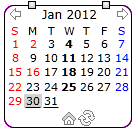
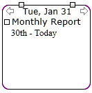
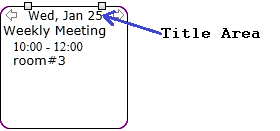
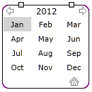
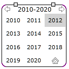
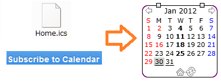
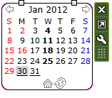
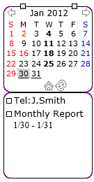

iCal Viewer 2 Help
Updated：April 7th, 2012

iCal Viewer 2 is Windows 7 sidebar gadget that is to remind your
schedule based on iCalendar format.
iCalendar format is used by many reminder applications
(ex: google calendar or Lightning) to save schedule information.
And also it is used to notify events like sport games, conventions, etc.
This sidebar gadget is useful to check these events briefly.
Why iCal Viewer 2 is because I've once developed same concept
sidebar gadget on Vista.
This is full scratch of it using Microsoft Silverlight.
By using Silverlight, performance for bigger iCalendar file got better.
Functions
- Shows brief information of events(VEvent) and uncompleted
todos(VTODO) based iCalendar format file, on local or internet
- Supports http, webcal and caldav protocol to access iCalendar file
on internet
- User ID and password authentificaton to access iCalendar file
on internet (Basic or Digest authentication)
- Uses 2 iCalendar file, one is for holidays and another is for your events and todos
- Supports customization
Setting Up
Download iCal2.gadget file and double click it. Sidebar gadget will be automatically installed.
If you see the image above on the sidebar gadget, Silverlight 5 runtime is
not installed in your PC.
Click the image will lead you to Silverlight 5 installation page.
After Silverlight 5 installation, restart the sidebar gadget.
This program uses Microsoft .Net Framework 4 to access iCalendar file
on internet.
If you get error access to internet, please try install
.Net Framework 4 Client Profile runtime
How to use
First you see is monthly calendar.
By default, today's background color is gray,
and days with some events is shown as bold.
If there is todos which date-time due or date-time to start,
shown as underline on calendar.
Click on the calendar date, then list of events or todo of the day
will be displayed.
Title of todo is headed by square (though you can not check it).


If you want go back to monthly view, click title area.
On monthly view, click title area will goes to yearly view.

On yearly view, you can select the month to show.
Click title area on yearly view goes to decade view.

Icons:

Move back and front month, year etc.
Back to this month.
Reload iCalendar file. Use when periodical auto reaload is not sufficient.

This icon is not shown normally.
It is shown when processing draw.
Normally checking and searching events from iCalendar file.
This icon is not shown normally.
It is shown when loading iCalendar file.
Drag & Drop iCalendar file
You can drop & drop your local file or link on the browser
to this sidebar gadget.
if the file or link is iCalendar format, events of the file will be shown.

List todos

If your mouse cursor is on this gadget, you see buttons on right.
Click middle of these buttons shows list of todos.

Same operation hides todo list.
On monthly calendar, todos only with date-time due or date-time start
ais shown.
But this todo list show all todos with or without date-time,
but not completed.
There is no function to show completed todos on this gadget
Settting
If your mouse cursor is on this gadget, you see buttons on right.
Click bottom of these buttons shows setting view (It takes a while).

On calendar tab you can set the iCalendar file for events and holidays.
If iCalendar file is from local, click chose button to select file.
If the iCalendar file is from internet, directly write on the text box
start with http://.
'http' can be changed to webcal or caldav depend on protocol.
If access is via SSL, chenage to https, webcals and caldavs.
If you need authentication to access the internet file,
set user ID and password.
For example to access google calendar (as of now),
iCalendar file is caldavs://www.google.com/calendar/dav/xyz@gmail.com/events/,
user ID is xyz@gmail.com and password is your google account password.
Replace xyz to your google account.
Click 'Connection Test' button to test if
it is able to access iCalendar file.
If it is success, 'OK' is shown as a result.
If it is error, error message will be shown.
'Clear' button is to clear connection test result.

On View tab, you can set date colors or background colors.
Background color is color of this sidebar gadget.
Icons can not change shape, but can change color.
Change color or bold/underline style of each day type.
Normal day color is default color of calendar date.

On Others tab you can set followings.
Reload interval is interval to access events and holiday calendar.
Set by minute(s). If you set 0 to this invterval, reload never happens.
On day view or todo view, you can click the title of events or todos.
Command setting is whant you want to do when events or todos are clicked.
You can execute local execution file or
browse internet page(http://...).
$Y, $M, $D, $U and $$ is replaced by event or todo's year, month, day,
UID and $, respectively.
If event, dates are start date of event.
If todo, dates are due date of todo.
If due date is not set, replaced to blank.
UID is unique ID of events or todos which is part of
iCalendar format specification.
You can set month view or day view title format here.
For detail, refer to
Silverlight Custom Date and Time Format Strings
Misc.
Abount time zone.
This program checks iCalendar format timezone, and time is converted
to system timezone.
iCalendar file must define it's timezone,
but some times it is not defined.
So this program has pre-defined timezone ID as follows:
- Asia/Japan
- US/Central
- US/Eastern
- US/Mountain
- US/Pacific
If other timezone ID is used but no definition,
timezone is treated as standard time.
Which means time displayed may not correct.
iCalendar format is spcified by RFC5545.
iCal Viewer 2 shows basic information of VEVENT component and
VTODO component. VJOURNAL and other component is ignored.
Repeated events (RRULE, RDATE, etc) is also supported.
Scroll bar
Scroll bar will be appreared if there is not enough area to show
information, but unfortunately you can not drag scroll bar.
Click each side of scroll bar will work.
I could not find a way to avoid this problem. Is anyone knows?
To access iCalendar file on internet, this gadget uses WebLoader.exe
execution file, which is included in installation image.
This execution file is based on .Net Framework 4.
Most web application like this uses javascript XMLHttpRequest class,
but I got problem when the specified URL is redirected.
May be because URL site is changed by redirection.
Thanks to
DOTS・DESIGN
There is many cool icons there
History
2012.4.7 v1.0.0.0 First Release